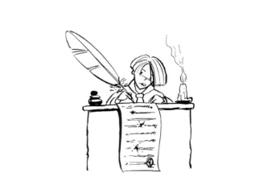

PORTFOLIO DE LILOU
Accueil
Mes productions écrites
mes vidéos
mes sites préférés
mes passions
Mon site de reve
mes productions écrites

bienvenue! Ici je vous montre mes productions écrite (interview de plusieurs personnage de l'oeuvre de Maupassant)